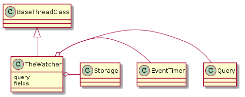

This is a watcher for information. Whatever query passed into it has to match the list of fields.
- Gets values from a query at timed-intervals
- Sends values to storage
- if threaded, runs in background
- Query
- Storage

TheWatcher(query, storage, fields[, ...]) |
A watcher of wifi information | ||
TheWatcher.header |
|
||
TheWatcher.__call__() |
The main interface. | ||
TheWatcher.check_rep() |
Checks that the querier has the fields passed in |
The query parameter should be a built query object (e.g. IwconfigQuery). The main interface runs threaded so the connection that it holds has to be thread-safe.
The fields parameter should be a list of names that match the properties of the query object that should be checked for output. If you want the RSSI and bitrate from the IwconfigQuery, for instance, you would pass in a list of ['signal_level', 'bit_rate'] for the fields.
Previously, the storage was always assumed to be a file-like object. To try and make it more flexible, I’m going to start assuming that it instead takes a dictonary and handles it (the behavior is assomed to match the csv.DictWriter).